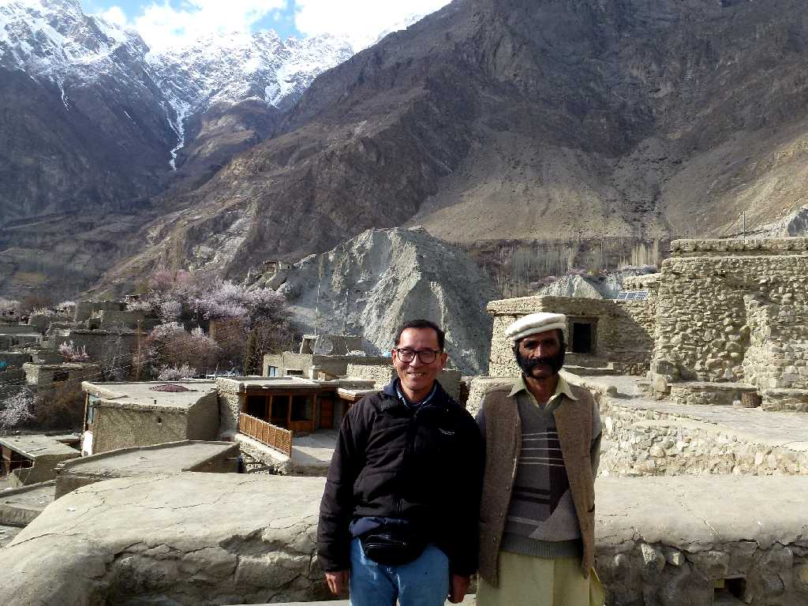
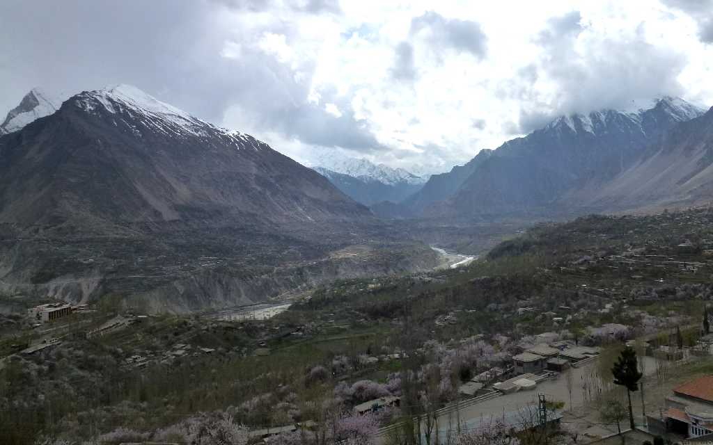
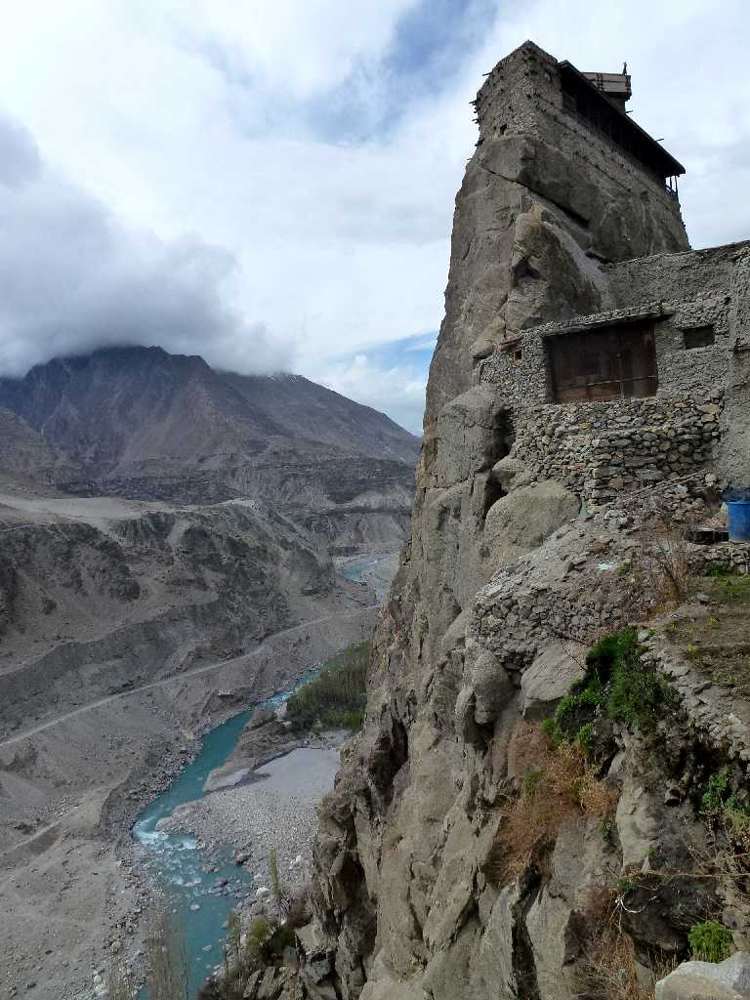
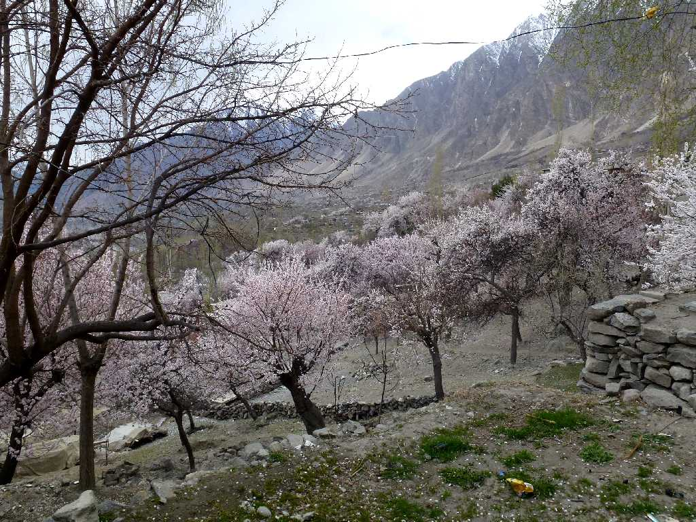
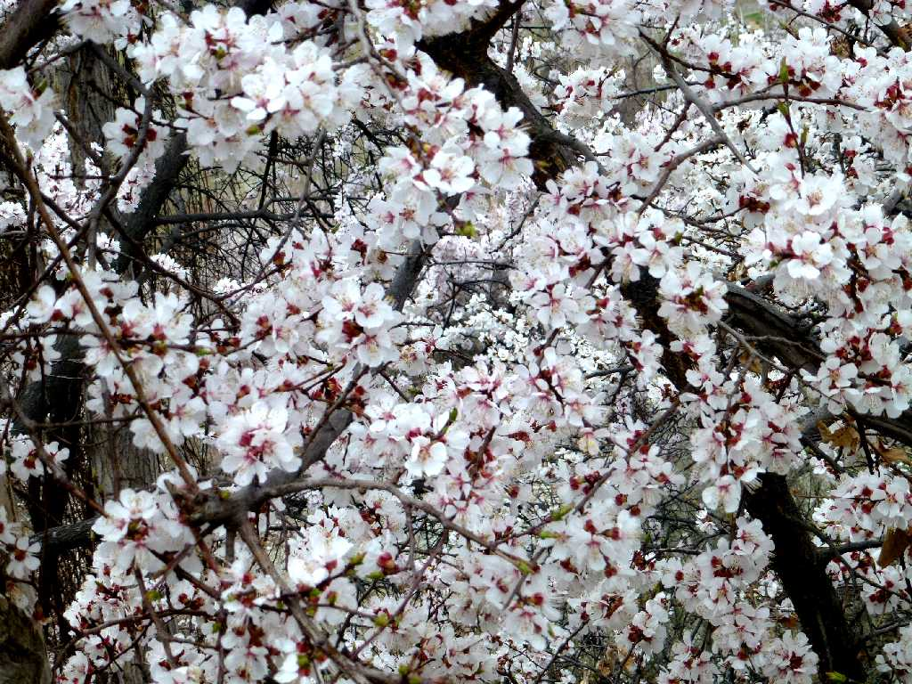
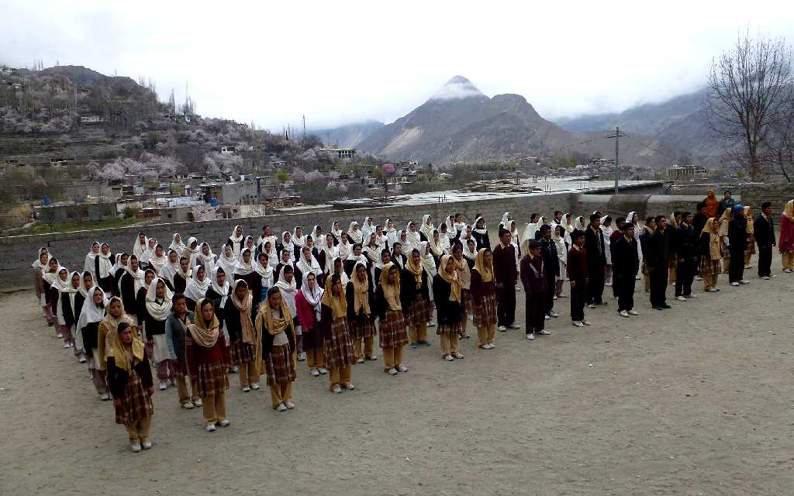

April 3 2013 Karimabad Hunza
長寿の里で桃源郷とも云われるカラコルムハイウェイの中継地でフンザ渓谷の標高２,４００mに位置するカリマバードの街並みと住民

Karimabad Hunza Valley

Karimabad Hunza Valley

Apricot Karimabad
４月上旬は杏の花が満開で美しい

Apricot Blossom Karimabad

Hasegawa Memorial Public School & College Karimabad
パキスタンの山を愛した日本人登山家長谷川恒男(妻)が１９９５年に寄贈した長谷川学校の朝礼